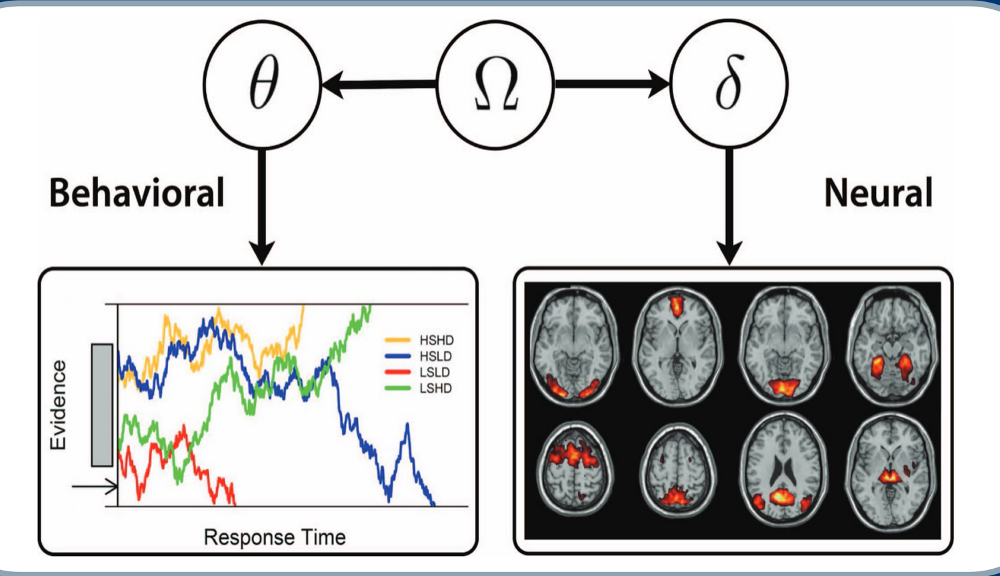
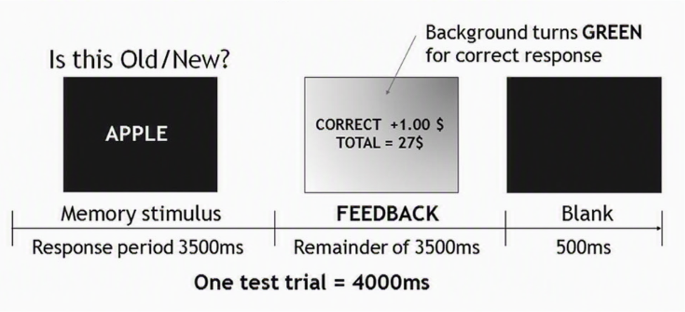
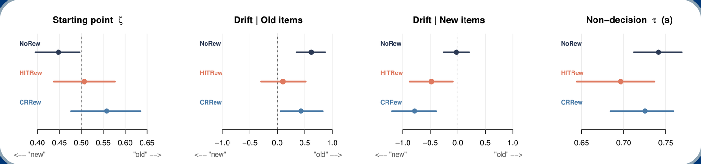
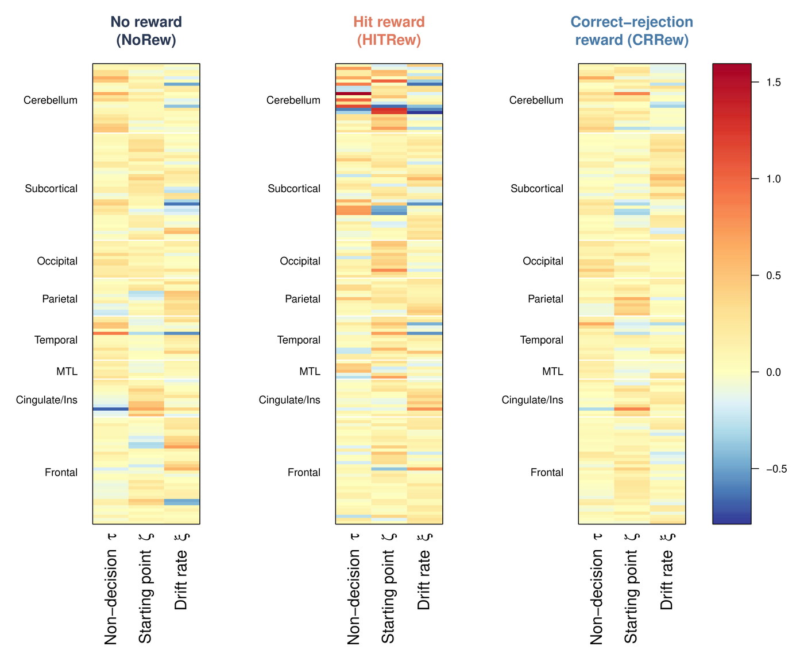

Abstract
Most previous applications of computational modeling to neuroscience first estimate cognitive model components and then relate them to measured neural activity. This two-step analysis has two limitations: uncertainty in the cognitive parameter estimates is not propagated to subsequent analyses, and neural data cannot inform estimation of the cognitive structure. The joint modeling framework in model-based cognitive neuroscience (MBCN; Turner et al., 2017) instead simultaneously estimates submodels for behavioral and neural data, as well as a linking function between their parameters. This approach allows the two modalities to constrain each other and treat associations between cognitive components and brain regions as quantities estimated within the same model rather than as post-hoc correlations. We demonstrate this framework with the fMRI word recognition data of Han et al. (2010), in which reward contingencies for recognition judgments were manipulated. The diffusion decision model (DDM) accounts for behavior, decomposing choices and response times into trial-wise information-processing rates and other cognitive components. The neural side uses single-trial beta estimates from regions of interest (ROIs) defined by the AAL3 atlas. A factor-analytic structure with Lasso regularization links the two sets of parameters and yields coefficients representing relationships between cognitive components and ROIs. For illustrative purposes, we apply this model to single-participant data with multiple experimental conditions and explore patterns of single-trial DDM parameters and their associations with ROIs across conditions. This application demonstrates how the framework jointly addresses the multimodal nature of data and brain-behavior connections within a unified model.
Background
Model-based cognitive neuroscience aims to give latent model components — the rate at which evidence accumulates, the caution with which a threshold is set — a neural interpretation rather than leaving them as descriptive fits to behavior. This is usually done in two steps: a cognitive model is fit to behavior, and the resulting parameter estimates are then related to brain activity.

The two-step approach carries two costs. Carrying point estimates into a second-stage correlation treats a noisy quantity as if it were known, which is most consequential for single-trial parameters, and tends to attenuate the estimated brain–behavior association. And information flows in one direction only: the neural data cannot constrain the cognitive model. Joint modeling instead specifies a behavioral submodel, a neural submodel, and a linking function between their parameters, and estimates all three at once, so that uncertainty propagates and brain–behavior associations become quantities estimated within the model rather than post-hoc correlations.
Methods
Task and data

Twenty participants (11 female, mean age 24) performed old/new word recognition during fMRI under three blocked reward conditions: no reward (200 trials), hit reward (100 trials) and correct-rejection reward (100 trials). Neural preprocessing comprised slice-timing correction, realignment, and MNI normalization, followed by single-trial beta estimation using Least Squares Separate (Mumford et al., 2012), conversion to percent signal change, and averaging within AAL3 atlas parcels, giving one value per trial per region. Because run order was counterbalanced across participants, behavioral and neural rows are reconciled explicitly, with trials dropped on one side also dropped on the other and alignment verified by row counts and by the rank correlation between behavioral and neural trial onsets.
The three submodels
- Behavioral A diffusion decision model,
(RT_t, r_t) ~ Wiener(a, τ_t, ζ_t, ξ_t). Boundary separationais a single policy parameter, while non-decision time, starting point, and drift rate vary from trial to trial; these three become the latent factors. Positivity and boundedness are handled by estimatingτon the log scale andζon the logit scale, and drift is signed by stimulus type so thatβ_stimestimates old–new drift separation. - Neural Trial-level, ROI-averaged percent-signal-change betas as observed indicators, with a multivariate normal measurement model and region-specific residual variances.
- Linking function A factor-analytic structure in which the
three trial-level decision parameters are the latent factors and ROI responses load onto
them through a loading matrix
Λ, so thatΣ = ΛΦΛᵀ + Ψand eachΛ_jkindexes how strongly region j tracks component k.
Because the decision parameters and the neural signal are drawn from a single covariance structure rather than from two models linked afterwards, the neural data contribute to identifying the single-trial decision parameters, and uncertainty in those parameters propagates into the loadings.
Regularization and identification
- Bayesian lasso on the loadings A hierarchical normal–exponential scale mixture shrinks small loadings toward zero, which is necessary given the number of AAL3 regions relative to the available trials.
- Factor covariance
Φis parameterized through a Cholesky factor with an LKJ(2) prior on the correlation matrix and half-Cauchy scales. - Rotational indeterminacy Resolved with sign-constrained anchor regions, one per factor, with cross-loadings parameterized as bounded ratios of the anchor loading; without this the factors are identified only up to rotation.
- Condition comparison A variant with condition-specific loadings and shrinkage-prior mean offsets allows the three reward conditions to be compared within a single fit rather than across separately fitted models.
Estimation
Models are estimated in Stan via rstan using Hamiltonian Monte Carlo with NUTS
and the built-in first-passage-time density. Fitting proceeds in two stages: a short
exploratory run of six chains with hand-constructed starting values, after which the chain
with the highest mean log-posterior seeds a main run of three chains × 10,000 iterations
(2,000 warm-up). This addresses the difficulty of sampling a model with three latent
parameters per trial from naive starting values. Models are pre-compiled and run as SLURM
array jobs over the participant × condition grid. Convergence is assessed by
R̂, effective sample size, divergent-transition counts, and trace plots, saved
with every fit. Parameter-recovery datasets were simulated across noise levels and loading
structures at both p = 30 and p = 128 before the model was applied to
the empirical data, and three linking structures — free, independent, and unit-variance
factor covariance — are implemented for comparison.
Results
The results below are from a single participant; the group-level analysis is in progress, and they are presented as an illustration of the framework rather than as a substantive finding.


Λ by reward condition, indicating which regions track which component of
the decision process. Cerebellar regions were prominent in the non-decision column across
conditions, which is consistent with non-decision time comprising encoding and motor
execution; under correct-rejection reward, thalamic regions loaded on drift rate.One pattern is worth noting. Under correct-rejection reward the starting point leaned toward "old", although that condition pays for responding "new". The penalized error in that condition is a miss, so a bias toward "old" reduces exposure to the penalty when evidence is ambiguous; the estimated bias therefore tracks the penalty structure rather than the reward structure. For this participant the two rewarded conditions ran in a fixed order, so reward condition is not separable from fatigue, which the counterbalanced group-level analysis is intended to address.